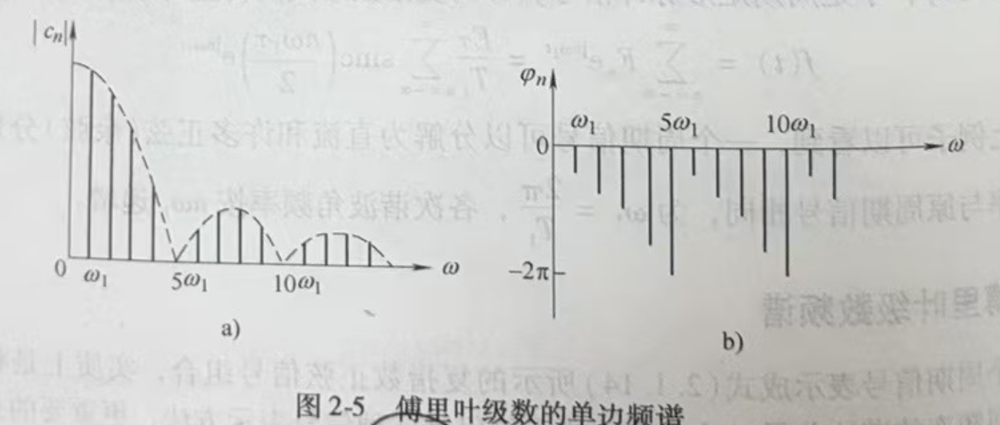
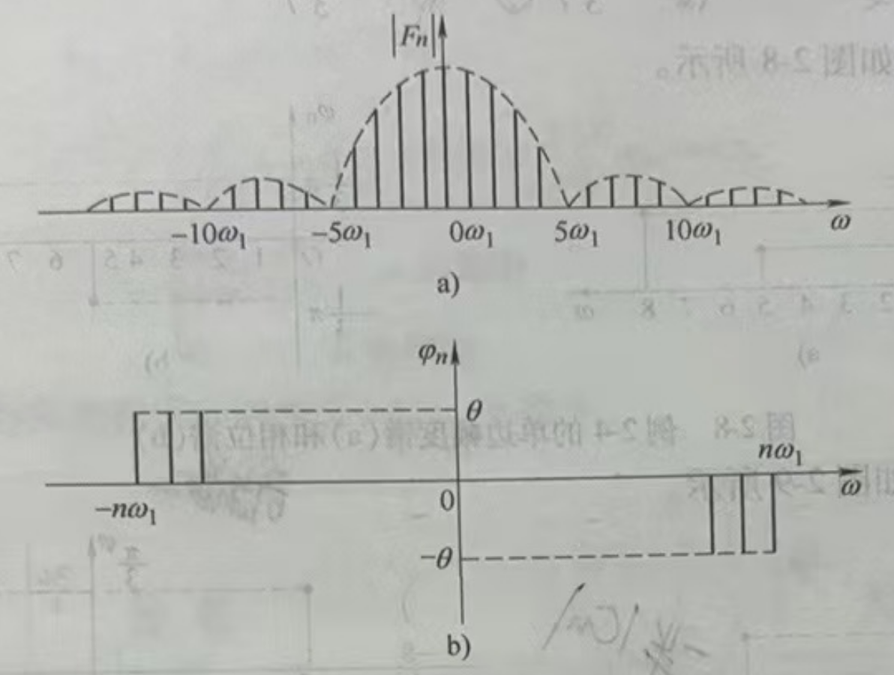
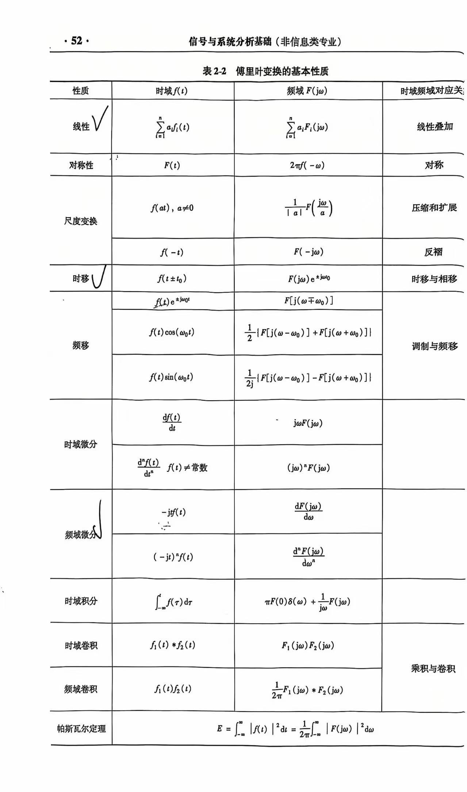
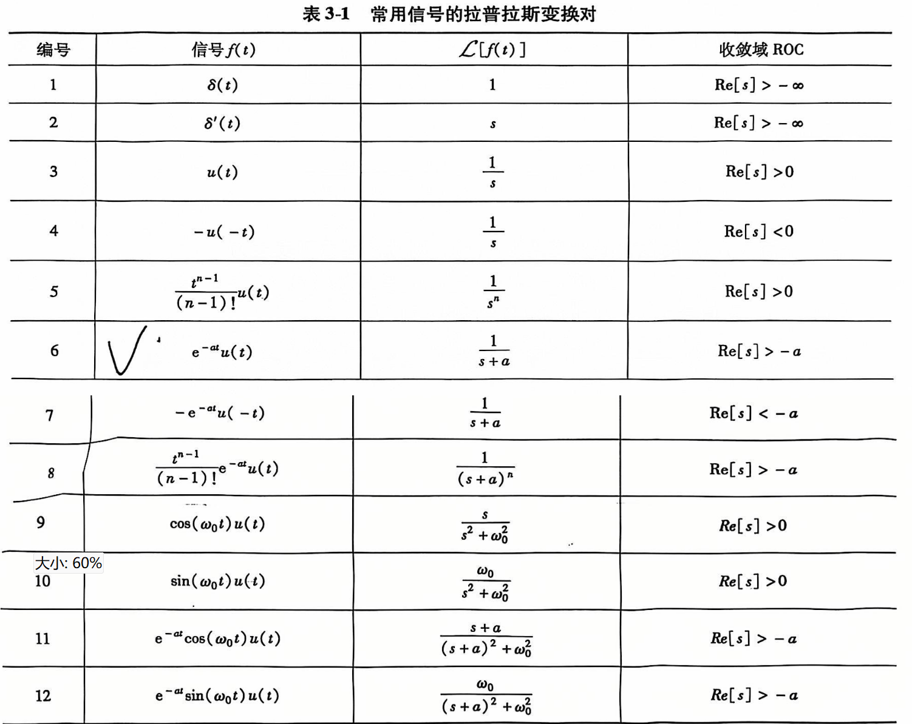
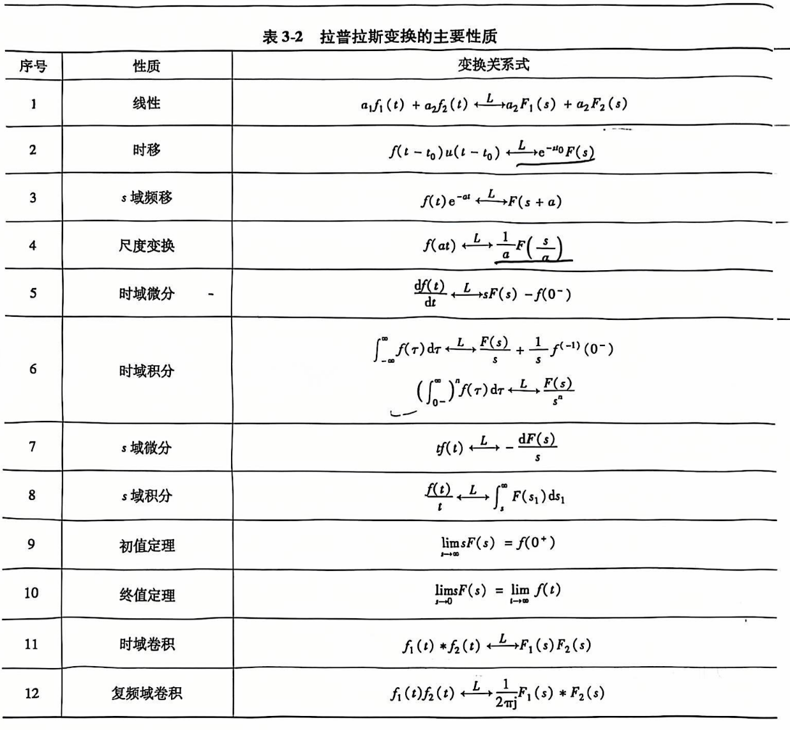
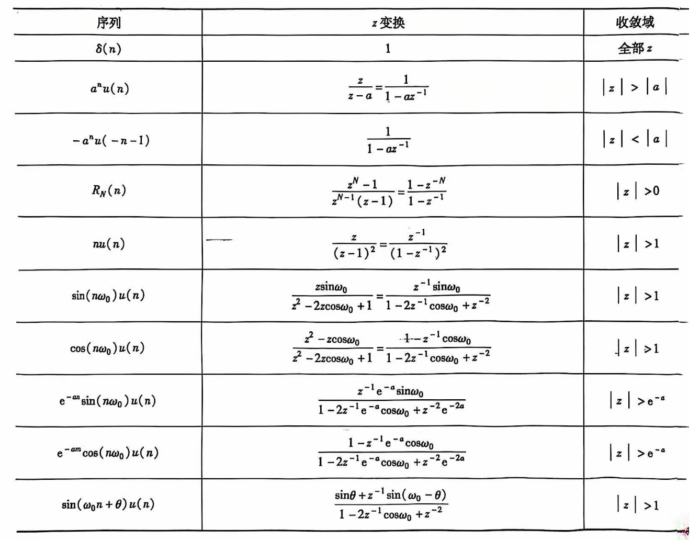
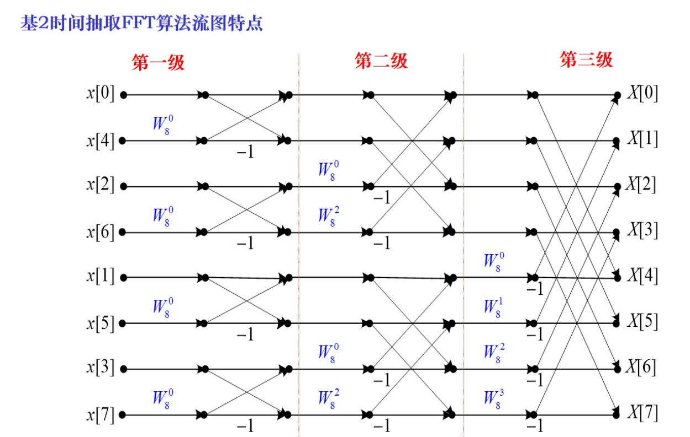
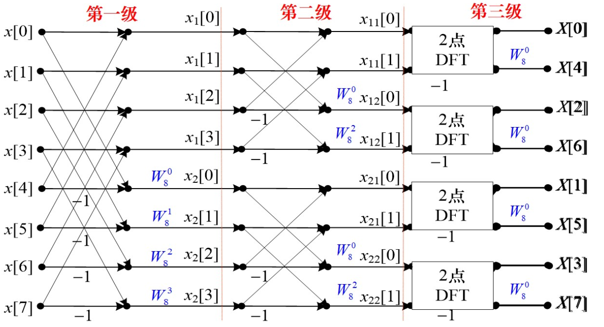

信号分析基础
信号与系统的基本概念
- 信号定义：信号是信息的载体，信息是信号的内涵。
- 信号的分类：
- 连续时间信号 - 离散时间序列
- 周期信号 - 非周期信号
- 确定性信号 - 随机信号
- 能量信号 - 功率信号。能量信号绝对平方可积（和），否则称为功率信号。
- 因果信号 - 反因果信号。右边信号就是因果信号，左边信号就是反因果信号。
- 连续与离散信号的运算：
- 反褶
- 移位
- 尺度变换
- 加、减、乘、标量乘
- 差分运算：向前差分：\(\nabla x[n] = x[n+1] - x[n]\)；向后差分：\(\Delta x[n] = x[n] - x[n-1]\)。且 \(\nabla x[n] = \Delta x[n-1]\)。
- 卷积运算：连续信号的卷积分：\(\int_{-\infty}^{\infty} f_1(\tau) f_2(t-\tau) d\tau\)；离散信号的卷积：\(x[n] * y[n] = \sum_{k=-\infty}^{\infty} x[k] y[n-k]\)。卷积运算的性质：交换律、分配律、结合律。
- 常见的信号序列：
- 正弦类：\(f(t)=A\cos(\omega t+\varphi)\)。根据欧拉恒等式，正弦函数信号可以写为：\(\sin(\omega t) = \frac{e^{j\omega t}-e^{-j\omega t}}{2j}\)，\(\cos(\omega t) = \frac{e^{j\omega t}+e^{-j\omega t}}{2}\)。
- 指数类：\(f(t)=Ae^{st}\)。根据欧拉等式，指数函数信号可以写为：\(e^{j\omega t} = \cos(\omega t) + j\sin(\omega t)\)。
- 单位冲激信号：\(\boxed{f(t)=\delta(t)=\begin{cases} \infty & t = 0\\0 & t\neq 0\end{cases}}\) 且有 \(\boxed{\int_{-\infty}^{\infty} \delta(t) dt=1}\)，且有如下筛选特性：\(\int_{-\infty}^{\infty}f\left(t\right)\delta\left(t\right)dt=\int_{0-}^{0+}f\left(t\right)\delta\left(t\right)dt=f\left(0\right)\int_{0-}^{0+}\delta\left(t\right)dt=f\left(0\right)\)
- 单位阶跃信号：\(\boxed{f(t)=u(t)=\begin{cases} 1 & t > 0\\0 & t < 0\end{cases}}\).
- 门函数：\(\boxed{\prod(\frac{t}{\tau}) = u(t+\frac{\tau}{2}) - u(t-\frac{\tau}{2}) = \begin{cases} 1 & |t| < \frac{\tau}{2} \\ 0 & others \end{cases}}\)；矩形序列：\(R_N(n) = \begin{cases} 1 & 0\leq n\leq N-1 \\ 0 & others \end{cases}\)。
- 内插函数信号（辛格函数）：\(sinc(x) = \frac{\sin(x)}{x}\)。
- 系统：
- 直接理解成这个就行：\(y(t)=T[x(t)]\)
- 连续系统与离散系统
- 线性系统与非线性系统。线性系统要满足可加性和比例性，即：\(T[x_1(t)+x_2(t)]=T[x_1(t)]+T[x_2(t)]\)、\(T[a_1x_1(t)]=a_1y_1(t)\)。一般来说，带常数就不是线性系统，同时不满足比例性和可加性。
- 时变系统与时不变系统。时不变系统要满足 \(T[x(t-t_0)]=y(t-t_0)\) 或 \(T[x(n-m)]=y(n-m)\)
- 判断线性、时不变性的关键点在于，套用公式时，要明确是对 \(x(t)\) 或 \(x(n)\) 进行变换（即 \(T[x(t)]\) 或 \(T[x(n)]\)），还是对 \(t\) 或 \(n\) 进行变换（即 \(y(t)\) 或 \(y(n)\)）。
- 同时具有线性和时不变性的系统成为线性时不变系统，也即 LTI 系统
- 因果系统与非因果系统。如果输出取决于未来的输入则成为非因果系统。非因果系统是不可物理实现的
- 稳定系统。输入有界且输出也有界，称为稳定系统，否则称为不稳定系统
- 零输入响应：输入信号为零，仅由系统初始状态(系统没有外部激励时系统的固有状态)单独作 用于系统而产生的输出响应，用 \(y_{zi}(t)\) 表示
- 零状态响应：忽略系统的初始状态，只由外部激励作用于系统而产生的输出响应，用 \(y_{zs}(t)\) 表示
- 全响应：\(y_{zi}(t) + y_{zs}(t)\)
连续信号的傅里叶变换
傅里叶级数


]- 三角形式的傅里叶级数：\(\boxed{f\left(t\right)=a_{0}+\sum_{n=1}^{\infty}\left(a_{n}\cos n\omega_{1}t+b_{n}\sin n\omega_{1}t\right)}\)；余弦形式：\(f\left(t\right)=c_{0}+\sum_{n=1}^{\infty}c_{n}\cos\left(n\omega_{1}t+\varphi_{n}\right)\)；正弦形式：\(f\left(t\right)=d_{0}+\sum_{n=1}^{\infty}d_{n}\sin\left(n\omega_{1}t+\theta_{n}\right)\)
- 直流分量：\(a_{0}=\frac{1}{T_{1}}\int_{0}^{T_{1}}f\left(t\right)dt=\frac{1}{T_{1}}\int_{-\frac{T_{1}}{2}}^{\frac{T_{1}}{2}}f\left(t\right)dt\)
- 余弦分量系数：\(a_{n}=\frac{2}{T_{1}}\int_{0}^{T_{1}}f\left(t\right)\cos n\omega_{1}tdt=\frac{2}{T_{1}}\int_{-\frac{T_{1}}{2}}^{\frac{T_{1}}{2}}f\left(t\right)\cos n\omega_{1}tdt\)
- 正弦分量系数：\(b_{n}=\frac{2}{T_{1}}\int_{0}^{T_{1}}f\left(t\right)\mathrm{sin}n\omega_{1}t\mathrm{d}t=\frac{2}{T_{1}}\int_{-\frac{T_{1}}{2}}^{\frac{T_{1}}{2}}f\left(t\right)\mathrm{sin}n\omega_{1}t\mathrm{d}t\)
- 各项关系，其中（\(n=1,2,\cdots\)）：\(\begin{cases} & a_{0}=c_{0}=d_{0} \\ & c_{n}=d_{n}=\sqrt{a_{n}^{2}+b_{n}^{2}} \\ & a_{n}=c_{n}\mathrm{cos}\varphi_{n}=d_{n}\mathrm{sin}\theta_{n} \\ & b_{n}=-c_{n}\mathrm{sin}\varphi_{n}=d_{n}\mathrm{cos}\theta_{n} \\ & \tan\theta_{n}=\frac{a_{n}}{b_{n}} \\ & \tan\varphi_{n}=-\frac{b_{n}}{a_{n}} \end{cases}\)
- 复指数形式的傅里叶级数：\(\boxed{f(t)=\sum_{n=-\infty}^{\infty}F_{n}e^{jn\omega_{1}t}}\)，其中 \(F_{n}=\frac{1}{T_{1}}\int_{0}^{T_{1}}f\left(t\right)e^{-jn\omega_{1}t}dt=\frac{1}{T_{1}}\int_{-\frac{T_{1}}{2}}^{\frac{T_{1}}{2}}f\left(t\right)e^{-jn\omega_{1}t}dt\)
- 周期信号的实质：一个周期信号由不同频率的谐波分量所组成。什么是谐波？可以简单理解为能够使用公式表达的、和谐的、规律的波形
- 傅里叶级数的频谱分为幅度谱和相位谱，分别对应幅频特性和相频特性
- 从傅里叶级数三角形式导出的单边频谱。幅频特性：\(\left|c_{n}\right|=\sqrt{a_{n}^{2}+b_{n}^{2}}\)；相频特性：\(\varphi_{n}=\arctan\left(\frac{-b_{n}}{a_{n}}\right)\)
- 从傅里叶级数复指数形式导出的双边频谱 幅频特性：\(\left|F_{n}\right|=\left|\frac{a_{n}-jb_{n}}{2}\right|=\frac{1}{2}\sqrt{a_{n}^{2}+b_{n}^{2}}\)；相频特性：\(\varphi_{n}=\arctan\left(\frac{-b_{n}}{a_{n}}\right)\)
- 双边频谱虽然有负频率，但负频率的出现完全是数学运算的结果，并没有任何物理意义
- 周期信号频谱的特点：离散性、谐波性、收敛性
傅里叶变换
- 正变换：\(\boxed{F\left(j\omega\right)=\mathcal{F}\left[f\left(t\right)\right]=\int_{-\infty}^{\infty}f\left(t\right)e^{-j\omega t}dt}\)
- 逆变换：\(\boxed{f\left(t\right)=\mathcal{F}^{-1}\left[F\left(j\omega\right)\right]=\frac{1}{2\pi}\int_{-\infty}^{\infty}F\left(j\omega\right)e^{j\omega t}d\omega}\)
- 傅里叶变换是一对线性变换，它们之间存在一一对应的关系
- 傅里叶级数分析对象是周期信号，傅里叶变换分析对象是非周期信号
- 傅里叶级数频率定义域是离散频率、谐波频率处，傅里叶变换频率定义域是连续频率、整个频率轴
- 傅里叶级数函数值意义是频率分量的数值，傅里叶变换函数值意义是频率分量的密度值
- 函数存在傅里叶变换的充分条件：\(\int_{-\infty}^{\infty}|f\left(t\right)|dt<\infty\)
- 根据欧拉恒等式：\(F\left(j\omega\right)=\int_{-\infty}^{\infty}f\left(t\right)e^{-j\omega t}dt=\int_{-\infty}^{\infty}f\left(t\right)\cos\left(\omega t\right)dt-j\int_{-\infty}^{\infty}f\left(t\right)\sin\left(\omega t\right)dt\)
- 由上式：\(\begin{cases}R\left(\omega\right)=\int_{-\infty}^{\infty}f\left(t\right)\cos\left(\omega t\right)dt \\X\left(\omega\right)=-\int_{-\infty}^{\infty}f\left(t\right)\sin\left(\omega t\right)dt & \end{cases}\)
- 由上式：\(\boxed{\begin{cases}|F\left(j\omega\right)|=\sqrt{R^{2}\left(\omega\right)+X^{2}\left(\omega\right)} \\ \varphi\left(\omega\right)=\arctan=\frac{X\left(\omega\right)}{R\left(\omega\right)} & \end{cases}}\)
- 由上式：\(|F\left(j\omega\right)|\) 是偶函数，\(\varphi\left(\omega\right)\) 是奇函数
- 如果信号 \(f(t)\) 的傅里叶变换 \(F(\)j\(\omega )\) 当 \(\omega>\omega_\mathrm{m}\) 时均为零，则称\(f(t)\)是带限的，正实数 \(\omega_m\) 称为信号 \(f({t})\) 的带宽
- 如果信号 \(f(t)\) 存在一个正实数 \(T_\mathrm{m}\)，当\(|t|>T_\mathrm{m}\) 时，\(f(t)=0\)，则该信号是时限的，它对应于频域有一个时宽\(T_{\mathrm{m}}\)
- 带限信号在时域上是无限连续时间的，即带限信号不能是时限的；相应地，时限信号必然是无限带宽的
- 典型傅里叶变换对：
- 门信号：\(\boxed{\Pi\left(\frac{t}{\tau}\right)\xleftrightarrow{F}\tau\sin c\left(\frac{\omega\tau}{2}\right)}\)
- 单边指数信号：\(\boxed{e^{-at}u\left(t\right)\xleftrightarrow{F}\frac{1}{a+j\omega}}\)
- 双边指数信号：\(\boxed{e^{-a|t|}\left(a>0\right)\xleftrightarrow{F}\frac{2a}{a^{2}+\omega^{2}}}\)
- 单位冲激信号：\(\boxed{\delta (t)\xleftrightarrow{F}1}\)
- 直流信号 \(f(t)=E\)：\(\boxed{E\xleftrightarrow{F}2\pi E\delta(\omega)}\)
- 符号函数：\(sgn(t)\xleftrightarrow{F}\frac{2}{j\omega}\)
- 单位阶跃信号：\(\boxed{u(t) \xleftrightarrow{F} \pi\delta(\omega)+\frac{1}{j\omega}}\)
傅里叶变换的基本性质

周期信号的傅里叶变换
- 直接使用傅里叶变换的定义的前提条件是要满足绝对可积，但周期信号并不满足绝对可积的条件。而引入奇异函数后，某些不满足绝对可积的信号也可以求傅里叶变换，所以有这一节。
- 周期信号的傅里叶变换公式：\(F\left(j\omega\right)=2\pi\sum_{n=-\infty}^{\infty}F_{n}\delta\left(\omega-n\omega_{1}\right)=\omega_{1}\sum_{n=-\infty}^{\infty}F_{0}\left(jn\omega_{1}\right)\delta\left(\omega-n\omega_{1}\right)\)
- 余弦函数的傅里叶变换：\(\mathcal{F}\left[\cos\left(\omega_{0}t\right)\right]=\pi\left[\delta\left(\omega-\omega_{0}\right)+\delta\left(\omega+\omega_{0}\right)\right]\)
- 正弦函数的傅里叶变换：\(\mathcal{F}\left[\sin\left(\omega_{0}t\right)\right]=\frac{\pi}{j}\left[\delta\left(\omega-\omega_{0}\right)-\delta\left(\omega+\omega_{0}\right)\right]\)
- 周期单位冲击序列的傅里叶变换：\(\mathcal{F}[\delta_{\omega 1}(\omega)] = \omega_{1}\delta_{\omega 1}(\omega)\)
- 周期矩形脉冲序列的傅里叶变换：\(E\tau\omega_{1}\sum_{n=-\infty}^{\infty}sinc\left(\frac{n\omega_{1}\tau}{2}\right)\delta\left(\omega-n\omega_{1}\right)\)；其傅里叶系数：\(F_{n}=\frac{1}{T}F_{0}\left(jn\omega_{1}\right)=\frac{E\tau}{T}sinc\left(\frac{n\omega_{1}\tau}{2}\right)\)
抽样信号的傅里叶变换
- 时域抽样定理（奈奎斯特定理）：一个频带受限的信号 \(f(t)\)，要想抽样后能够不失真地还原出原信号，抽样频率必须大于 2 倍信号谱的最高频率。
连续信号的拉普拉斯变换
拉普拉斯变换的定义及收敛域
- 为什么要有拉普拉斯变换：傅里叶变换需要满足绝对可积的先决条件，为不收敛的函数乘上收敛因子后，就可以满足这一条件。而乘上收敛因子再求其傅里叶变换的过程，就可以视为拉普拉斯变换。
- 求法：\(\begin{cases} F\left(s\right)=\int_{-\infty}^{\infty}f\left(t\right)e^{-st}dt \\ f\left(t\right)=\frac{1}{2\pi j}\int_{\sigma-j\infty}^{\sigma+j\infty}F\left(s\right)e^{st}ds & \end{cases}\)
- 收敛域：右边信号（\(\sigma > \sigma_1\)）、左边信号（\(\sigma < \sigma_2\)）、双边信号（\(\sigma_1 < \sigma < \sigma_2\)）、时限信号（整个 s 平面）

单边拉普拉斯变换的性质

单边拉普拉斯的逆变换
- 查表法
- 部分分式展开法
- 分母的所有根均为单实根：分式划开，各部查表
- 分母的根具有共轭复根且无重复根
- 分母仅有重根
连续时间系统的 s 域分析
- 系统函数 \(H(s)\)：\(H(s)=\frac{Y_{ZS}(s)}{X(s)}\)，它与系统的输入和输出无关，描述了系统本身的特性。一旦系统的拓扑结构已定，它也就确定了，它存在的条件是系统的起始状态为零，即 \(y_{zi(0)=0}\)。
- 线性系统的稳定性：一个系统受某种干扰信号作用时，其所引起的系统响应在干扰消失后，会最终消失，即系统可以回到干扰作用前的状态，称系统是稳定的。
- 对于一般系统，系统稳定的充要条件是冲击响应 \(h(t)\) 绝对可积。
- 系统稳定性结论：
- 稳定：\(H(s)\) 的全部极点位于 \(s\) 域的左半平面
- 临界稳定：\(H(s)\) 在虚轴上有 \(p=0\) 的单极点或一对共轭单极点，其余极点全在 \(s\) 域的左半平面
- 不稳定：\(H(s)\) 只要有一个极点位于 \(s\) 域的右半平面，或在虚轴上有二阶或二阶以上的重极点，则系统不稳定。
离散信号与系统
z 变换
- \(\boxed{X\left(z\right)=\sum_{-\infty}^{\infty}x\left(n\right)z^{-n}}\)，其中 \(z = e^{s}\)
-
级数判断敛散性的两个方法：
- \(\rho=\lim_{n\to\infty}\left|\frac{a_{n+1}}{a_{n}}\right|\)
- \(\eta=\lim_{n\to\infty}\sqrt[n]{\left|a_{n}\right|}\)
-
z 变换的收敛域：
- 有限长序列：\(0<|z|<\infty\)，但两边是否能取等号要看情况，如果求和下界小于零，则不能取无穷的等号；求和上界大于零则不能取零的等号
- 右边序列：\(|z|>\lim\limits_{n\to\infty}\sqrt[n]{|x\left(n\right)|}=R_{x1}\)
- 左边序列：\(|z|<\frac{1}{\lim\limits_{n\to\infty}\sqrt[n]{\left|x\left(-n\right)\right|}}=R_{x2}\)
- 双边序列：\(R_{x1}<|z|<R_{x2}\)

z 逆变换
离散傅里叶变换
快速傅里叶变换
按时间抽取的基-2FFT算法
- 正常算法的时间复杂度：\(N^2\)
- 本算法和按频率抽取的基-2FFT算法的复杂度：\(\frac{N}{2}\mathrm{log}_2N\)

按频率抽取的基-2FFT算法

逆快速傅里叶变换
- \(x[k]=\frac{1}{N}\left(\mathrm{DFT}\{X^*[m]\}\right)^*\)
- 意即：将 \(X[m]\) 选取共轭，用 \(FFT\) 流图计算 \(DFT\{X^*[m]\}\)，再取共轭并除以 \(N\)